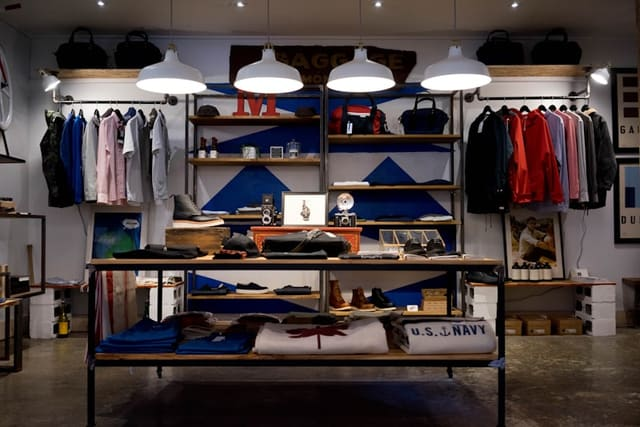

Nettoyage de commerces et de surfaces de vente
Une surface de vente impeccable à l'ouverture : sols, vitrines et sanitaires clients entretenus avant l'arrivée de vos premiers visiteurs.
27 € HT/h · régulier ou ponctuel · réponse sous 24 h

Réponse directe
La propreté d'un commerce influence directement l'image perçue par vos clients. Nous adaptons nos horaires à vos jours et heures d'ouverture, y compris tôt le matin.
Cette prestation suit la méthode décrite dans notre page nettoyage professionnel et le tarif de 27 € HT/h. Nous l'assurons notamment à Dijon, Besançon, Chalon-sur-Saône et partout en Bourgogne-Franche-Comté. Pour cadrer votre besoin en amont : à quelle fréquence faire nettoyer ses locaux.
Pour qui ?
- Boutiques et prêt-à-porter
- Showrooms
- Salons et instituts
- Points de vente centre-ville et zone commerciale
Les espaces et tâches pris en charge
- Nettoyage et lustrage des sols
- Vitrines : incluses uniquement lorsqu'elles sont accessibles sans équipement spécialisé et prévues au devis
- Cabines et mobilier de vente
- Sanitaires clients et personnel
- Dépoussiérage des rayonnages
- Espace caisse et accueil
Hors prestation courante : nettoyage de vitrines en hauteur nécessitant une nacelle, entretien de stocks en réserve non accessibles, désinfection réglementée (agroalimentaire).
Les situations concrètes que nous traitons
Une vitrine ternie ou des sols marqués dès l'ouverture donnent une image négative avant même l'arrivée du premier client.
Les jours de forte affluence (soldes, marché, week-end) demandent parfois un passage supplémentaire pour tenir la surface de vente propre toute la journée.
Exemple pour une boutique ouverte du mardi au samedi : passage quotidien avant ouverture (sols, vitrines, caisse, sanitaires) ; cabines et rayonnages en fin de semaine.
Trois configurations, trois organisations
Le volume d'heures et la fréquence ne se déduisent pas d'une surface. Voici les cas de figure que nous rencontrons le plus souvent, et le rythme qui leur correspond généralement.
Passage avant ouverture
C'est l'organisation la plus fréquente : l'intervenant entre avant votre arrivée ou avec vous, et la surface de vente est prête avant le premier client. Le créneau est calé sur votre heure d'ouverture réelle, avec une marge de sécurité. Cela suppose que l'accès et l'alarme soient organisés à l'avance et consignés par écrit.
Passage après fermeture
Lorsque l'ouverture est trop matinale ou que la boutique est difficile d'accès le matin, l'intervention a lieu après la fermeture. L'avantage : plus de temps disponible et aucune gêne pour la clientèle. Le point de vigilance : les sols lavés le soir peuvent marquer à nouveau si un réassort a lieu très tôt le lendemain.
Renfort sur les jours de forte fréquentation
Samedi, jour de marché, soldes, fêtes de fin d'année : certains jours concentrent l'essentiel du passage et salissent les sols et les cabines en quelques heures. Un passage supplémentaire, ou un second passage court en milieu de journée, peut être prévu par avenant au devis pour ces périodes précises, puis retiré ensuite.
Le détail, espace par espace et contrainte par contrainte
Contraintes avant ouverture
Un passage avant ouverture se joue sur un créneau court et non extensible : tout ce qui n'est pas fait avant l'arrivée du premier client ne peut pas être rattrapé dans la journée. Nous priorisons donc explicitement dans le cahier des charges — sols, vitrine, caisse et sanitaires clients d'abord — et plaçons en second rang ce qui peut attendre le passage suivant : rayonnages hauts, réserves, plinthes.
Sols fragiles et revêtements d'agencement
Les commerces concentrent des revêtements sensibles : parquet huilé, béton ciré, résine coulée, marbre, pierre naturelle, sol vinyle imprimé. Chacun demande un produit et un dosage d'eau adaptés, sous peine de traces durables ou de perte de brillance. Nous relevons la nature exacte des sols au moment du cahier des charges et appliquons les préconisations de votre agenceur, avec les produits que vous fournissez.
Vitrines et surfaces vitrées
Les vitrines sont incluses uniquement lorsqu'elles sont accessibles sans équipement spécialisé et prévues au devis : vitrage de plain-pied, porte d'entrée, vitrophanie, séparations intérieures. Tout ce qui exige une nacelle, une perche télescopique, un échafaudage ou un travail en hauteur est exclu de la prestation courante et relève d'un prestataire équipé pour cela.
Espaces de vente et rayonnages
La surface de vente se traite par zones : sols et circulations à chaque passage, mobilier de présentation et têtes de gondole en dépoussiérage régulier, rayonnages hauts et éclairages selon une fréquence plus espacée. Nous ne déplaçons pas la marchandise et ne remettons pas les articles en place : le facing reste votre travail, le nettoyage le nôtre.
Zone de caisse
La caisse est le point le plus touché de la boutique et le plus visible au moment du paiement : comptoir, terminal, écran, poignées de tiroir, tapis de sol, corbeille. Elle est traitée à chaque passage. Les espèces, les documents et les objets clients ne sont jamais manipulés ni déplacés, et rien n'est rangé dans les tiroirs.
Réserves et arrière-boutique
Les réserves sont traitées lorsqu'elles sont dégagées : sol, poubelles, surfaces libres, coin repos ou vestiaire du personnel. Les stocks, cartons et racks ne sont pas déplacés. Une réserve durablement encombrée est signalée dans le cahier de liaison, afin que la question soit tranchée avec vous plutôt que contournée en silence à chaque passage.
Cabines d'essayage
Pour un commerce d'habillement, les cabines concentrent l'essentiel de l'impression de propreté : sol, miroir, banquette ou tabouret, patères, rideau ou porte, plinthes. Les articles et cintres oubliés par la clientèle sont rassemblés à un endroit convenu avec vous plutôt que remis en rayon, pour éviter toute confusion avec le stock.
Adaptation saisonnière
La charge d'un commerce n'est pas linéaire sur l'année. Nous prévoyons dès le devis les périodes susceptibles de demander un renfort — soldes, fêtes, saison touristique, rentrée — et la façon de l'activer : passage supplémentaire ponctuel, allongement temporaire de la durée de passage, ou intervention ponctuelle de remise à niveau avant une réouverture ou un changement d'agencement.
Une organisation carrée, du planning au suivi
Exemple de cahier des charges
Pour une boutique de centre-ville ouverte du mardi au samedi, le cahier des charges type prévoit : sols lavés chaque matin avant ouverture, vitrine et porte d'entrée nettoyées quotidiennement, cabines d'essayage et miroirs vérifiés, sanitaires clients désinfectés, rayonnages dépoussiérés une fois par semaine, avec un renfort le samedi si l'affluence le justifie.
Produits et matériel
Les produits adaptés aux sols de la boutique (parquet, carrelage, résine) et aux vitrines sont généralement fournis par vos soins, pour respecter les préconisations de votre agencement. Nous signalons tout consommable à renouveler (produits vitres, sacs, papier sanitaire) via le cahier de liaison.
Accès et clés
L'accès au commerce est organisé selon votre rythme : remise de clés pour une intervention avant l'ouverture, ou passage en votre présence si vous préférez. Le code d'alarme et les consignes de fermeture sont consignés et transmis uniquement aux intervenants concernés par votre point de vente.
Sélection de l'intervenant
Nous sélectionnons un intervenant habitué aux contraintes du commerce : rapidité d'exécution avant l'ouverture, soin apporté aux surfaces visibles par la clientèle (vitrine, sol, caisse). Nous privilégions autant que possible un intervenant habituel, qui finit par connaître l'agencement de votre boutique et vos temps forts, sans que cette continuité puisse être garantie de façon absolue.
Suivi
Un cahier de liaison reste sur place pour signaler toute anomalie constatée (vitrine fissurée, produit manquant) et tracer les passages. Audrey reste votre interlocutrice pour ajuster la fréquence selon la saison ou les temps forts commerciaux (soldes, fêtes).
Absence et remplacement
En cas d'absence de l'intervenant habituel, nous recherchons une solution de remplacement en priorité pour les commerces, où une vitrine ou un sol négligé se remarque immédiatement. Vous êtes informé de l'organisation retenue ; aucun remplacement immédiat n'est pour autant garanti dans tous les cas de figure.
Une semaine type
Semaine type pour une boutique ouverte du mardi au samedi, passage quotidien de 7 h 30 à 8 h 45 : chaque matin, sols de la surface de vente, vitrine et porte d'entrée, zone de caisse, sanitaires clients et corbeilles. Le mercredi s'ajoutent les cabines d'essayage et les miroirs en détail ; le vendredi, le dépoussiérage des rayonnages et du mobilier de présentation ; le samedi, un passage resserré sur les sols et la vitrine avant une journée de forte affluence.
Les limites de la prestation
Sont exclues de la prestation courante : les vitrines et enseignes en hauteur nécessitant un équipement spécialisé, la manipulation ou le rangement de la marchandise, le facing, la désinfection réglementée en environnement agroalimentaire, et l'entretien des réserves durablement encombrées. Ces points peuvent être chiffrés séparément ou confiés à un prestataire spécialisé.
« La boutique est prête avant l'ouverture, y compris les jours de marché où nous ouvrons plus tôt. Les vitrines prévues au devis sont faites, et ce qui ne l'est pas nous a été dit clairement dès le départ. »
Cette prestation près de chez vous
Toute la Bourgogne-Franche-Comté →Questions fréquentes — Commerces
Pouvez-vous intervenir avant l'ouverture, très tôt le matin ?
Oui, c'est le cas le plus fréquent pour les commerces : nous nous calons sur votre heure d'ouverture réelle.
Un passage supplémentaire est-il possible un jour de forte affluence ?
Oui, sur devis complémentaire, par exemple avant un week-end de soldes ou un marché.
Les vitrines extérieures sont-elles comprises ?
Les vitrines sont incluses uniquement lorsqu'elles sont accessibles sans équipement spécialisé et prévues au devis. Les vitrines en hauteur, les enseignes et les surfaces nécessitant une nacelle ou une perche télescopique sont exclues de la prestation courante.
Comment adaptez-vous la prestation aux sols fragiles ?
Parquet huilé, béton ciré, résine, marbre ou pierre naturelle ne supportent pas les mêmes produits ni les mêmes quantités d'eau. Nous relevons la nature exacte de vos revêtements au moment du cahier des charges et appliquons les préconisations de votre agenceur ou de votre fournisseur, avec les produits que vous mettez à disposition.
Que faites-vous des réserves et de l'arrière-boutique ?
Les réserves sont traitées lorsqu'elles sont dégagées et accessibles : sol, poubelles et surfaces libres. Nous ne déplaçons pas les stocks, les cartons ni le mobilier de rangement, et les zones encombrées sont signalées dans le cahier de liaison plutôt que contournées silencieusement.
Les cabines d'essayage sont-elles comprises ?
Oui : sol, miroir, banquette ou tabouret, patères et rideau ou porte. Le linge, les cintres et les articles oubliés par la clientèle ne sont pas rangés mais rassemblés à un endroit convenu avec vous, afin que rien ne disparaisse.
Adaptez-vous la fréquence selon la saison ?
Oui, c'est fréquent dans le commerce : soldes, fêtes de fin d'année, période estivale ou marché hebdomadaire modifient nettement la fréquentation. Un renfort temporaire ou un passage supplémentaire peut être prévu par avenant au devis, puis retiré lorsque la période s'achève.
Encore une question sur Commerces ? Audrey vous répond directement.
Nous contacterUn devis pour Commerces
Réponse claire et chiffrée sous 24 h, sans engagement.